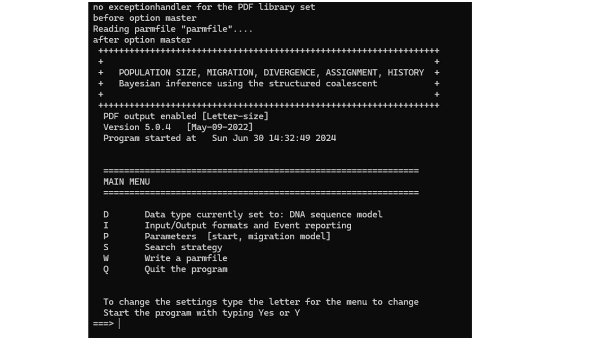
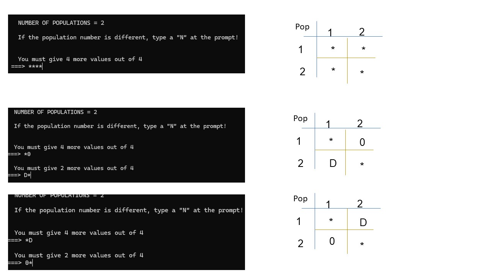

#install.packages("devtools")
#library(devtools)
#install_github("carlopacioni/mtraceR")MIGRATION
Is there migration between the populations?
A straightforward way to answer the question about gene flow and whether it is high or not is by using the software DNASP. You can download it at: http://www.ub.edu/dnasp/
Learn how to define groups and set up sequence formats in Genetic Structure > AMOVA in Arlequin. The detailed explanation has been provided earlier; here, we focus solely on obtaining the values and interpreting them. Ensure you use aligned data and follow the steps to define the desired groups and data formats.
1°Click on Analysis, and then on Gene flow and genetic differentiation
2° Then a new window will open. Before clicking OK, define the formats you wish to use.
3°Obtaining and interpreting the results.
Table
Explanation: The analysis of gene flow between two populations, based on haplotypes, DNA sequences, and nucleotide substitutions, revealed high genetic homogeneity and very high gene flow. Genetic differentiation measures (DeltaSt, GammaSt, Gst, Nst, and Fst) indicate little to no differentiation, with extremely high values of Nm suggesting significant genetic exchange between populations, keeping them genetically indistinguishable.
Due to the high migration rate, genetic differentiation caused by random genetic drift is avoided, as individuals freely circulate between populations.
Which model best explains migration?
For this study, we will use the software Migrate-n. Click to download: https://peterbeerli.com/migrate/
First, we need to convert the file for Migrate-n. Use PGDSpider for this purpose. After conversion, you’ll notice the file is in TXT format. Open the file in a text editor, go to “Save As,” change the file extension from .txt to .seq, and ensure the file is organized correctly. Here’s an example of an input for Migrate-n:
Before listing the first individual of the second population in your input, ensure there’s information about the population’s name and the number of individuals.
Once you’ve completed these steps, open the Migrate-n program. The program’s initial screen will appear as follows:

Type D and press Enter. This will open the following screen where you can define, for example, the model you wish to use. Simply enter 1 to select the model. To return to the main screen, type y.
Let’s set up our input and name the output file. Since we’re starting with the full matrix model, name it ‘full_matrix’. Here’s how: type 'I' and press Enter to enter the following screen. Then, type '1' and Enter to specify the input name, enter your input file’s name, and press Enter. Use 'Y' to return, then type '7' and Enter to set the output name, enter your desired output file name, and press Enter. Finally, type ‘Y’ and Enter twice to return to the initial screen.

On the initial screen, type P to set the parameters, then enter 5 to define the model.
Important: I’ll guide you through setting up each model or hypothesis I’ve decided to test. Remember, earlier we named the output “Full matrix.” When adding each model, I’ll append it to “Full matrix ****.” Then, I’ll return to the main screen to configure the remaining settings specific to that model. For instance, in ‘S,’ you’ll set parameters like the number of Markov chains and other details as needed. I’ll provide a reference article and video on this webpage. After setting up, I’ll run the Full matrix model and wait until the “finished” message appears. A PDF file named Full matrix will be generated in the program’s folder. I’ll repeat this process for model 1, naming the output model 1 and configuring it accordingly. After running and receiving the “finished” message, I’ll proceed similarly for subsequent models.

Once completed, you’ll obtain three PDFs, each corresponding to a different model. Copy the BTI value from each PDF as indicated in the table below, and paste it into your R code. Next, we’ll determine which model best explains gene flow using R software.
Choosing the best model
First, you’ll need to install the devtools package, and then download mtraceR from GitHub.
The values enclosed in parentheses represent the BTI values for Full matrix, Model 1, and Model 2, respectively.
library(mtraceR)
mod.comp <- BF(c(-3383.03, -3363.48, -3364.00))
mod.comp lmL LBF mod.rank mod.prob
1 -3383.03 -39.10 3 0.000
2 -3363.48 0.00 1 0.739
3 -3364.00 -1.04 2 0.261Based on likelihood values, Bayes factors, and probabilities, Model 1 (Group 1 → Group 2) best fits the data. This suggests that migration from Group 1 to Group 2 is the most likely direction. Model 2, where Group 2 influences Group 1, is less probable but still plausible. Model 3, suggesting bidirectional flow, receives very weak support from the data.